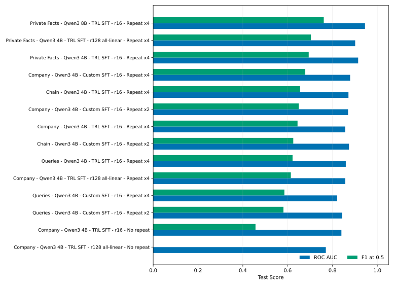
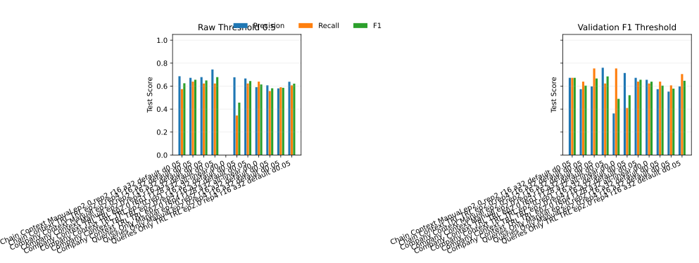
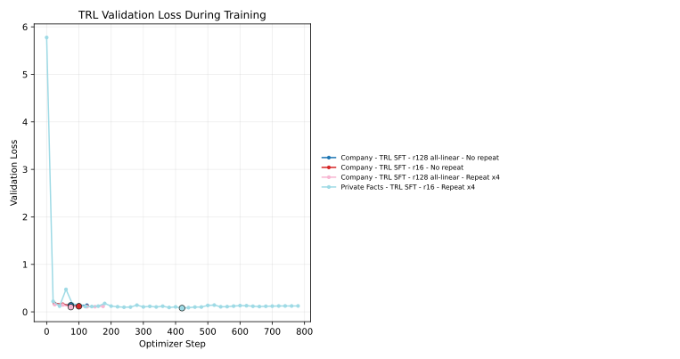
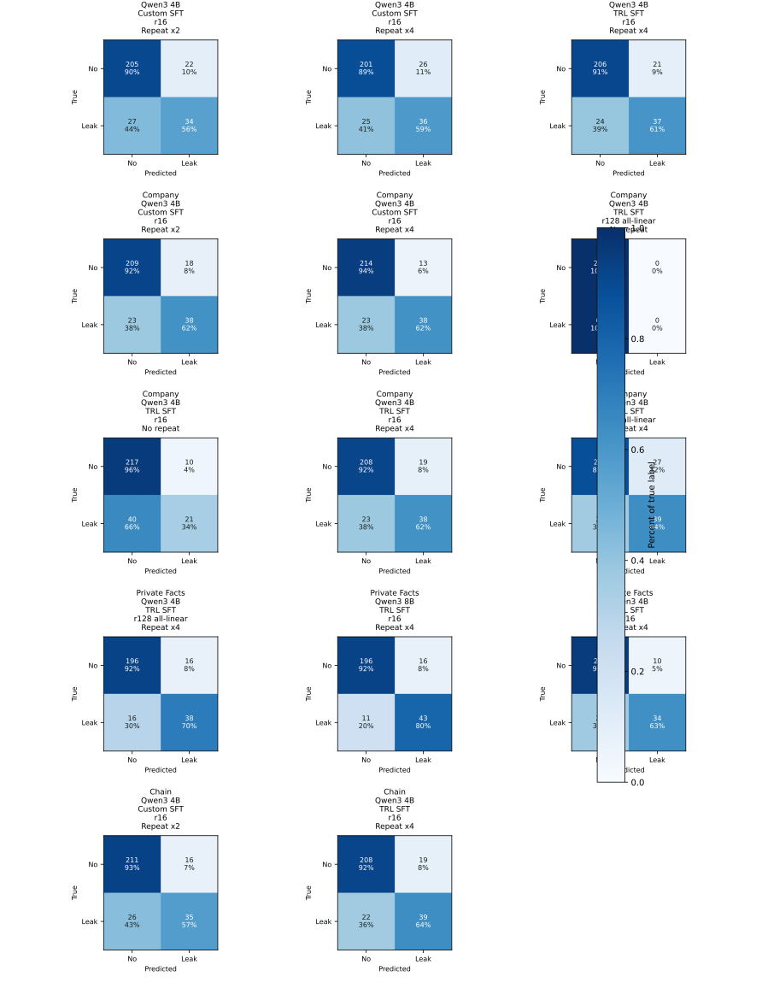
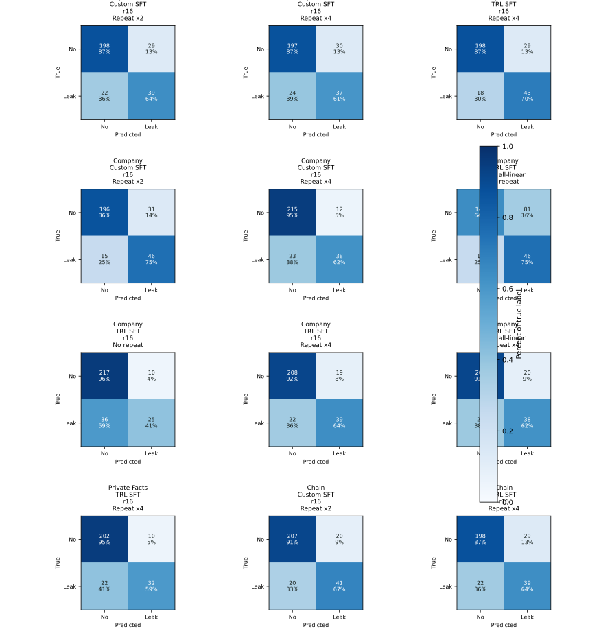
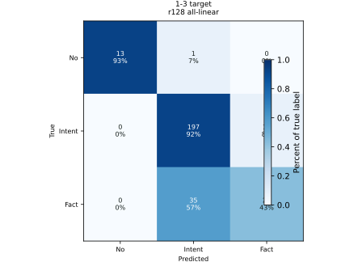

Score Distribution

Generated 2026-05-15T17:51:37.868989+00:00. Binary label predicts whether StepFun judged a rollout as privacy-leaking at score 4 or 5.
Best raw-threshold practical F1 is Company - Custom SFT - r16 - Repeat x4: ROC AUC 0.879, precision 74.5%, recall 62.3%, F1 67.9%. Best oracle/contextual run is Private Facts - TRL SFT - r16 - Repeat x4: AUC 0.914, precision 77.3%, recall 63.0%, F1 69.4%. Best TRL SFT run is Company - TRL SFT - r16 - Repeat x4: AUC 0.857, precision 66.7%, recall 62.3%, F1 64.4%. The ablation says positive repeat is important for recall/calibration; r=128 all-linear did not clearly improve over r=16 default LoRA. The ternary setup is useful diagnostically, but fact-leak F1 is only 50.5% with recall 42.6%, below the binary reward model.
| Split | Rows | Tasks | Fact-Leak Positive Rows | Positive Rate |
|---|---|---|---|---|
| Train | 2235 | 77 | 310 | 13.9% |
| Val | 205 | 9 | 37 | 18.0% |
| Test | 266 | 14 | 54 | 20.3% |
Random ranking AUC is 0.500. The test positive rate is 20.3%; an always-No classifier has zero recall and zero F1. Run tables report the row counts from each run's own prediction files, so older pre-rebuild runs may show different counts.
| Binary Target | Yes when StepFun overall privacy leakage score is 4 or 5; No for 1-3. |
|---|---|
| Ternary Target | A = no leakage, B = intent-only leakage, C = answer/full-information fact leakage. |
| Trainer Labels | Custom SFT is the older hand-written Hugging Face Trainer loop; TRL SFT uses TRL's SFTTrainer. Both train the causal LM on label tokens, not a separate classification head. |
| Binary Score | P(leakage) is softmax(Yes, No) from the next-token logits after the prompt. |
| Threshold | The 0.5 threshold is the Yes-vs-No argmax. The report also shows a validation-selected threshold chosen to maximize validation F1. |
| Evaluation | Metrics use next-token probabilities for exact label tokens, not sampled generation. |
| Primary Metrics | ROC AUC for ranking plus precision, recall, and F1 at threshold 0.5 and a validation-selected F1 threshold. |
| Splits | Clean deterministic task-id grouped train/validation/test split. |
| Efficiency | TRL SFTTrainer prompt-completion loss, FlashAttention 2, Liger kernel, fused AdamW, bf16, gradient checkpointing. |
| Logging | W&B project alexgurung/privacy_hopqa_binary_reward_sft; current TRL runs stream online and log eval_loss. |
| Queries Only | Only the visible web query sequence. This is the strict deployable setting if the reward model only sees public searches. |
|---|---|
| Company Context | Visible web queries plus company name. This is still cheap at runtime and helps decide whether a query reveals enterprise-private facts. |
| Chain Context | Visible web queries plus company, hop pattern, research question, and subquestions. Diagnostic/oracle-style context, not the main deployable setting. |
| Private Facts | Visible web queries plus company and the full retrieved-doc Private QA/local-hop fact list. This is an oracle/contextual reward model, useful for testing whether explicit private-fact context improves precision. |
| Test | Trainer | Variant | Positive Repeat | LoRA | Best Val Loss | Test ROC AUC | Precision @0.5 | Recall @0.5 | F1 @0.5 | Val F1 Threshold | Precision @ValThr | Recall @ValThr | F1 @ValThr | TP/FP/FN @0.5 | Test Positives | W&B | Path |
|---|---|---|---|---|---|---|---|---|---|---|---|---|---|---|---|---|---|
| Chain - Base | Base | Chain Context | 4 | n/a | n/a | 0.540 | 21.3% | 100.0% | 35.2% | 0.999 | 22.7% | 88.5% | 36.1% | 61/225/0 | 61/288 | /mnt/llmd/results/exps/alexg/reason/privacy_hopqa_q30_binary_reward_sft_20260515/models/chain_context_base_eval_full | |
| Company - Base | Base | Company Context | 4 | n/a | n/a | 0.726 | 24.3% | 98.4% | 39.0% | 1.000 | 31.6% | 78.7% | 45.1% | 60/187/1 | 61/288 | /mnt/llmd/results/exps/alexg/reason/privacy_hopqa_q30_binary_reward_sft_20260515/models/company_context_base_eval_full | |
| Queries - Base | Base | Queries Only | 4 | n/a | n/a | 0.695 | 22.4% | 96.7% | 36.4% | 1.000 | 28.3% | 86.9% | 42.7% | 59/204/2 | 61/288 | /mnt/llmd/results/exps/alexg/reason/privacy_hopqa_q30_binary_reward_sft_20260515/models/queries_only_base_eval_full | |
| Chain - Custom SFT - r16 - Repeat x2 | Custom SFT | Chain Context | 2 | r16 a32 default d0.05 | n/a | 0.874 | 68.6% | 57.4% | 62.5% | 0.400 | 67.2% | 67.2% | 67.2% | 35/16/26 | 61/288 | /mnt/llmd/results/exps/alexg/reason/privacy_hopqa_q30_binary_reward_sft_20260515/models/chain_context_lora_full_ep2_rep2 | |
| Company - Custom SFT - r16 - Repeat x2 | Custom SFT | Company Context | 2 | r16 a32 default d0.05 | n/a | 0.869 | 67.9% | 62.3% | 65.0% | 0.300 | 59.7% | 75.4% | 66.7% | 38/18/23 | 61/288 | /mnt/llmd/results/exps/alexg/reason/privacy_hopqa_q30_binary_reward_sft_20260515/models/company_context_lora_full_ep2_rep2 | |
| Company - Custom SFT - r16 - Repeat x4 | Custom SFT | Company Context | 4 | r16 a32 default d0.05 | n/a | 0.879 | 74.5% | 62.3% | 67.9% | 0.562 | 76.0% | 62.3% | 68.5% | 38/13/23 | 61/288 | /mnt/llmd/results/exps/alexg/reason/privacy_hopqa_q30_binary_reward_sft_20260515/models/company_context_lora_full_ep2_rep4 | |
| Queries - Custom SFT - r16 - Repeat x2 | Custom SFT | Queries Only | 2 | r16 a32 default d0.05 | n/a | 0.843 | 60.7% | 55.7% | 58.1% | 0.349 | 57.4% | 63.9% | 60.5% | 34/22/27 | 61/288 | /mnt/llmd/results/exps/alexg/reason/privacy_hopqa_q30_binary_reward_sft_20260515/models/queries_only_lora_full_ep2_rep2 | |
| Queries - Custom SFT - r16 - Repeat x4 | Custom SFT | Queries Only | 4 | r16 a32 default d0.05 | n/a | 0.821 | 58.1% | 59.0% | 58.5% | 0.378 | 55.2% | 60.7% | 57.8% | 36/26/25 | 61/288 | /mnt/llmd/results/exps/alexg/reason/privacy_hopqa_q30_binary_reward_sft_20260515/models/queries_only_lora_full_ep2_rep4 | |
| Chain - TRL SFT - r16 - Repeat x4 | TRL SFT | Chain Context | 4 | r16 a32 default d0.05 | n/a | 0.871 | 67.2% | 63.9% | 65.5% | 0.245 | 57.4% | 63.9% | 60.5% | 39/19/22 | 61/288 | W&B | /mnt/llmd/results/exps/alexg/reason/privacy_hopqa_q30_binary_reward_sft_trl_20260515/models/chain_context_trl_full_ep2_rep4 |
| Company - TRL SFT - r128 all-linear - No repeat | TRL SFT | Company Context | 1 | r128 a32 all-linear d0.0 | 0.138 | 0.770 | 0.0% | 0.0% | 0.0% | 0.165 | 36.2% | 75.4% | 48.9% | 0/0/61 | 61/288 | W&B | /mnt/llmd/results/exps/alexg/reason/privacy_hopqa_q30_binary_reward_sft_trl_20260515/models/company_context_trl_full_ep2_rep1_r128_alllinear_d0 |
| Company - TRL SFT - r16 - No repeat | TRL SFT | Company Context | 1 | r16 a32 default d0.05 | 0.118 | 0.840 | 67.7% | 34.4% | 45.7% | 0.469 | 71.4% | 41.0% | 52.1% | 21/10/40 | 61/288 | W&B | /mnt/llmd/results/exps/alexg/reason/privacy_hopqa_q30_binary_reward_sft_trl_20260515/models/company_context_trl_full_ep2_rep1_r16_default |
| Company - TRL SFT - r16 - Repeat x4 | TRL SFT | Company Context | 4 | r16 a32 default d0.05 | n/a | 0.857 | 66.7% | 62.3% | 64.4% | 0.469 | 67.2% | 63.9% | 65.5% | 38/19/23 | 61/288 | W&B | /mnt/llmd/results/exps/alexg/reason/privacy_hopqa_q30_binary_reward_sft_trl_20260515/models/company_context_trl_full_ep2_rep4 |
| Company - TRL SFT - r128 all-linear - Repeat x4 | TRL SFT | Company Context | 4 | r128 a32 all-linear d0.0 | 0.101 | 0.857 | 59.1% | 63.9% | 61.4% | 0.593 | 65.5% | 62.3% | 63.9% | 39/27/22 | 61/288 | W&B | /mnt/llmd/results/exps/alexg/reason/privacy_hopqa_q30_binary_reward_sft_trl_20260515/models/company_context_trl_full_ep2_rep4_r128_alllinear_d0 |
| Private Facts - TRL SFT - r16 - Repeat x4 | TRL SFT | Private Facts | 4 | r16 a32 default d0.05 | 0.079 | 0.914 | 77.3% | 63.0% | 69.4% | 0.531 | 76.2% | 59.3% | 66.7% | 34/10/20 | 54/266 | W&B | /mnt/llmd/results/exps/alexg/reason/privacy_hopqa_q30_binary_reward_sft_trl_20260515/models/private_fact_context_trl_full_ep2_rep4_r16_bestloss |
| Queries - TRL SFT - r16 - Repeat x4 | TRL SFT | Queries Only | 4 | r16 a32 default d0.05 | n/a | 0.859 | 63.8% | 60.7% | 62.2% | 0.294 | 59.7% | 70.5% | 64.7% | 37/21/24 | 61/288 | W&B | /mnt/llmd/results/exps/alexg/reason/privacy_hopqa_q30_binary_reward_sft_trl_20260515/models/queries_only_trl_full_ep2_rep4 |
| Test | Best Val Loss | Accuracy | Macro F1 | Macro OVR AUC | Fact Precision | Fact Recall | Fact F1 | Fact-vs-Rest AUC | Confusion A/B/C | W&B | Path |
|---|---|---|---|---|---|---|---|---|---|---|---|
| Company - TRL SFT - 1-3 target - r128 all-linear | 0.131 | 81.9% | 78.4% | 0.878 | 61.9% | 42.6% | 50.5% | 0.820 | [[13, 1, 0], [0, 197, 16], [0, 35, 26]] | W&B | /mnt/llmd/results/exps/alexg/reason/privacy_hopqa_q30_binary_reward_sft_trl_20260515/models/company_context_trl_ternary_ep2_balanced_r128_alllinear_d0 |


These are the repeated training-time validation-loss evaluations from TRL trainer state. In W&B this curve is logged as eval/loss; final classifier metrics such as eval/test/roc_auc are logged once after training.

Rows are true labels, columns are predicted labels. Each cell shows count and percent of the true-label row.

The validation threshold is selected independently for each run to maximize validation F1.

A = No leakage, B = intent leakage, C = fact leakage. The plot uses readable class names.
